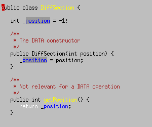

In this article, I discuss the various naming conventions that are used
in C++ and Java, and try to explain which ones should be adopted in Java
and what others could be left. The end goal is to make the transition to
a more uniform Java naming style as smooth as possible. Everything that
follows should be read as personal ideas and advice, not as imperative
directions you should adhere to unconditionally. You should start by reading
Doug Lea's
coding standard to get a general idea on conventions, and then use
the following discussion to make decisions for yourself.
As a corollary, the datamembers (usually private or protected) will be sent back to the bottom of the class. The rationale here is that when you are looking at a header, you are interested in the interface part of the class, and you don't want to have your reading impeded by implementation details.
Member functions usually start with a lower case (following the Smalltalk trend), and static ones are capitalized :
// C++Most of the time, datamembers will be flagged with a specific naming convention. The most common is a leading underscore, but you can see variations :
void aFunction();
static void AStaticFunction();
// C++and for static :
int _name;
int name_;
int m_name;
int ivName; // for "instance variable"
// C++
static int _Name;
static int Name_;
// not sure what the static equivalent for m_name is...
static int cvName; // for "class variable"
public, protected and private functions are usually scattered throughout the class, and attributes tend to be declared at the top of the class.
The naming of methods obeys the same rule as C++, but it also applies to static functions :
public void aFunction();No naming convention is used for attributes, they just can't be distinguished from standard "auto" variables (more on this below). Referencing attributes is often performed via this :
static public void aStaticFunction();
// JavaThere is of course much more to be said on Java conventions, but I will focus on these issues since they are relevant to C++. Once again, take a look at Doug Lea's ideas on the matter.
void f(String name) {
this.name = name;
}
Let's first take a look at the rationale behind some of C++ namings.
- Differentiating static and member functionsThe idea between this distinction is that making a member function static (or the other way around) is not just a syntactic change. It has deep implications that often go as far as the design of the whole framework itself. While static functions are simply "datamember functions without a this parameter", their place in the overall environment is considerably modified when this status changes.Imposing a name distinction forces the programmer to go through all their code again and make sure that not only the former code will keep compiling and working, but possibly remove or add lines of code. For example, making a member function static will probably allow you to create less objects, thus avoiding needless new's.
- Differentiating datamembers and local variablesThis is a very important step, and I really feel angry each time I see this teaching was lost when moving to Java. Without a proper naming convention, you can run in very stupid bugs that should never happen. Consider :
// Java
class A {
String name;
public void f(String h) {
this.name = name;
}
}This code will compile just fine but the bug will make you lose some precious time.Another gain in differentiating datamembers is when you need to read code. Without the proper convention, it is very difficult to see if a function modifies this or not (in C++, whether it is const or not). If you go for the leading _ notation, the presence of a _ in the piece of code you are perusing gives you an immediate hint about what the functions does on this.
One last important gain : it completely rules out possible "hiding"
situations :// Java
class A {
int a;
public void f() {
int a = 0;
//
a = 42; // mmmh... do we mean a or this.a ?
}
}
- Layout of the classesWhile seeing datamembers declared at the top of a class will surely shock most C++ programmers, it can actually make sense if you add interfaces into the equation.C++ doesn't have "native" support for interfaces. Usually, the .hpp file will be used as the interface (definition) of the class (possibly using pure virtual functions, but that's a detail).
While Java doesn't distinguish "header file" and "implementation file", interfaces serve this purpose just fine. The situation can be summed up this way :
Java C++ Interface interface .hpp file Implementation .java file .cpp file Seeing the picture with the above table in mind, you can see how it makes sense to have attributes declared on top of the .java file : it's because this file is the implementation of the class. Anybody reading it will be interested in implementation details, and in that respect, a cursory glance of the attributes might be of some help.
Of course, for this to fully work, one must program extensively with interfaces, and I can only hope that interfaces will be more and more used in the future.
Of all the above points, there is but one that should be adopted without exception in Java : standard convention for attributes.
Attributes must be distinguished from plain old "automatic" variables syntactically. You can adopt whichever norm you prefer (the most widespread being probably _name and m_name), but use it consistently and encourage everyone around you to do the same.
There will be reluctance, of course, because some people have aesthetic considerations when it comes to code appearance, but with proper highlighting, the uniform naming makes a lot of sense.
I personally use a "soft" highlighting to flag attributes in my code,
and I use a "strong" highlighting (for example using a different background
or a bold case) when such attributes are assigned. This makes a tremendous
difference when browsing code. Here is an example :

(this example also features some personal highlighting which a few people will most likely find way too psychedelic to their taste, so you should focus on the attributes colors solely). The sample code in elisp that allows that kind of highlighting can be found here.
Apart from this mandatory requirement, the other conventions in C++ can or should be dropped in order not to make the transition to a better Java coding style too painful. I can live without being able to distinguish static functions from member ones. The same goes for attributes. Note that it is a compromise I have accepted to make, but if I was to work alone on a project, I would probably stick to them anyway because I know that it won't annoy greatly "standard" Java programmers if they must read my code one day.
I would insist on having static functions prefixed with their class, though :
void f() {This seems to be a reasonable compromise as far as naming is concerned and makes it clear that the invoked function is not using this at all.
aNonStaticFunction();
ClassName.aStaticFunction();
}
for their helpful hints on these matters.